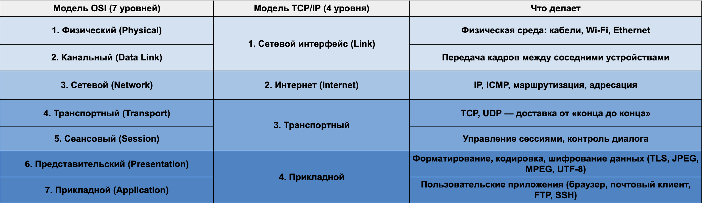

Применение TCP/IP в реальности
При открытии сайта происходит следующее:
DNS находит IP-адрес сайта (например, 93.184.216.34).
TCP устанавливает соединение с сервером (через 3-way handshake: SYN → SYN-ACK → ACK).
HTTP (на прикладном уровне) запрашивает страницу.
Сервер отправляет HTML-файл.
TCP/IP доставляет данные в браузер, пакет за пакетом.
Браузер собирает их обратно и показывает страницу.
Преимущества
Надежная доставка данных.
Масштабируемость (работает от домашних сетей до глобальных).
Универсальность (поддерживается всеми ОС и устройствами).
Совместимость с любыми типами сетей.
Недостатки
Сложная настройка маршрутизации вручную.
Не всегда эффективно использует ресурсы сети (особенно TCP при высоких потерях пакетов).
Плохая защита данных «из коробки» (шифрование добавляется отдельно — например, через SSH, HTTPS, VPN).
Почему TCP/IP на практике важнее модели OSI
Основное отличие в том, что модель :ref:`OSI <section-osi> — теоретическая основа. Она помогает понять, где и что работает, но в реальных системах не используется напрямую.
Протоколы TCP/IP — это рабочие стандарты, которые применяются в реальной жизни.
Интернет и локальные сети работают по модели TCP/IP, а не по OSI. Все знакомые технологии (HTTP, HTTPS, SMTP, FTP, DNS, SSH) реализованы именно в рамках этой модели.
Вместо семи уровней OSI TCP/IP имеет четыре, потому что многие функции :ref:`OSI <section-osi> объединили для удобства.
В TCP/IP нет отдельного Сеансового и Представительского уровней — их функции выполняет Прикладной уровень. Канальный и физический уровни OSI в TCP/IP объединены в один — сетевой интерфейс.
